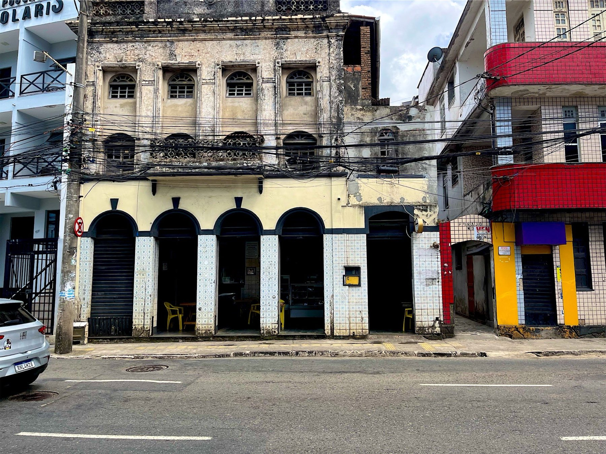
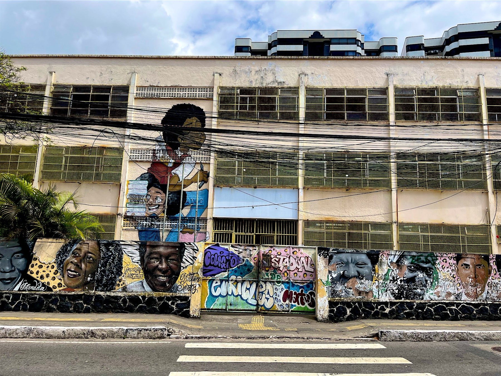
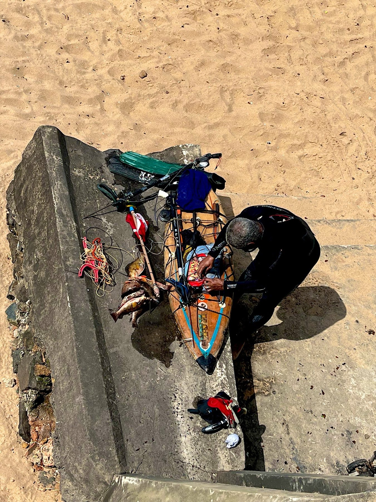
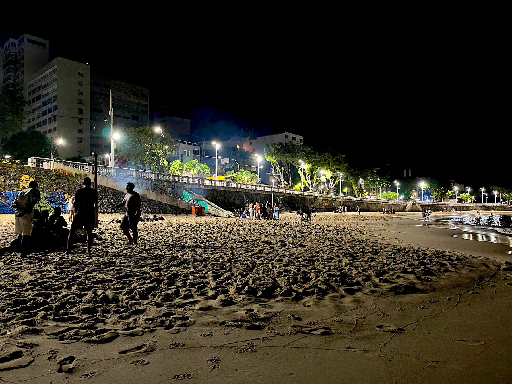

Best areas at a glance
First-timers
Barra
Seafront promenade, Porto da Barra beach, the lighthouse and plenty of restaurants. Well lit and walkable. Mid-range R$350–600 (~US$59–100) · High-end R$700–1,500 (~US$120–255) per night
Families & calm
Ondina
Next to Barra, quieter, with large seafront hotels and pools. Mid-range R$350–600 (~US$59–100) · High-end R$700–1,400 (~US$120–235) per night
Foodies & night owls
Rio Vermelho
Bohemian bars, acarajé stands and live music; design hotels near the sea. Mid-range R$350–650 (~US$59–110) · High-end R$800–1,800 (~US$135–305) per night
Romance & design
Santo Antônio Além do Carmo
Quiet cobbled streets and boutique pousadas with bay views, minutes from the Pelourinho. Mid-range R$400–800 (~US$67–135) · High-end R$1,400–3,500 (~US$235–590) per night
History lovers
Pelourinho
Sleep inside the UNESCO center. Lively by day; use rides at night. Mid-range R$400–800 (~US$67–135) · High-end R$1,400–3,500 (~US$235–590) per night
Longer stays
Pituba & business districts
Residential, modern and safe, with malls and chain hotels — but farther from the sights. Mid-range R$300–550 (~US$51–93) · High-end R$600–1,000 (~US$100–170) per night
How Salvador is laid out
Salvador spreads along a peninsula between the Atlantic and the Bay of All Saints. The historic center — the Pelourinho and Santo Antônio Além do Carmo — sits on the clifftop Upper City, with the port, Mercado Modelo and boats to the islands in the Lower City below. South of the center, the coast curves round to Barra at the tip of the peninsula, then runs east through Ondina, Rio Vermelho, Pituba and on to Itapuã and the airport (about 25–40 minutes by car from Barra). Most visitors stay in one of three zones: the seafront (Barra/Ondina), the bohemian coast (Rio Vermelho) or the historic center.

Barra: the best base for a first trip
Barra is the most consistently recommended neighborhood for first-time visitors. You get a lit, walkable seafront promenade, the calm swimming beach of Porto da Barra, sunsets at the Farol da Barra, plenty of restaurants and supermarkets, and a visible police presence. App rides to the Pelourinho take about 15–20 minutes. It’s popular and in demand, so prices are a little higher than inland areas. During Carnival, Barra sits on the main Barra–Ondina circuit — fantastic if you want to be in the party, loud if you don’t.

Ondina: quieter seafront
Just east of Barra, Ondina has large seafront hotels with pools and a calmer feel, which makes it popular with families. It’s an easy walk or short ride to Barra, and like Barra it’s on the Carnival circuit.

Rio Vermelho: food, music and local life
Rio Vermelho is the neighborhood with the most personality outside the historic center — the place locals go out. Stay here for acarajé at the Largo de Santana, seafood restaurants, bars with live music and the Festa de Iemanjá on February 2. It’s livelier and noisier than Barra, with stylish design hotels near the water. Main streets are busy until late; use app rides between venues at night.

Santo Antônio Além do Carmo: romance and views
A few minutes’ walk beyond the Pelourinho, Santo Antônio is quieter and more residential, with cobbled streets, colorful colonial houses and some of the city’s most charming boutique pousadas, many with views over the bay. It’s our pick for couples who want atmosphere without the Pelourinho’s crowds. Evenings are calm; take app rides when going further.

The Pelourinho: full immersion
Sleeping in the UNESCO historic center means waking up among baroque churches and pastel mansions, with museums and music on your doorstep — and some of Salvador’s most luxurious addresses in restored convents and palaces. The trade-offs: noise from music and crowds, steep cobbles, and side streets that empty out at night. Opinions split: some travelers love it, others prefer to visit by day and sleep by the sea. If you stay here, choose a hotel on a main square and use app rides after dark.

Pituba and modern districts
Pituba, Itaigara and the Caminho das Árvores are modern, residential and generally safe, with malls, chain hotels and good-value apartments. They work for longer stays, business trips or travelers with a car, but you’ll need rides to reach the historic center and the best beaches.

What you get at each price level
- Mid-range (around R$350–800 (~US$59–135)): modern 3–4★ seafront hotels in Barra or Ondina, or charming pousadas in Santo Antônio, usually with breakfast and air conditioning; many have pools or rooftops.
- High-end (around R$700–3,500 (~US$120–590)): design hotels in Rio Vermelho, boutique mansions with bay views, and luxury hotels in restored historic buildings in the Pelourinho with spas and fine dining.
Citywide, 4-star hotels average around R$700 (~US$120) a night and 5-star around R$2,100 (~US$355). Prices are lowest from April to June and highest in February.

Where to stay for Carnival
For the big trio elétrico parades, stay in Barra or Ondina, right on the Barra–Ondina (Dodô) circuit — expect noise around the clock and minimum stays at premium prices. For a calmer base with access to the party, consider Rio Vermelho. The Pelourinho hosts its own smaller, more traditional Carnival. Book six months or more ahead.

Safety tips by neighborhood
- Barra and Ondina are the most comfortable for walking, including early evenings along the seafront.
- In Rio Vermelho, stick to busy streets at night and ride between venues.
- In the Pelourinho and Santo Antônio, enjoy the main squares in the evening and take app rides home.
- Avoid walking through the Comércio (Lower City) after business hours.
More in our Bahia safety guide.
Nightly prices are for a double room, usually with breakfast, from public listings and local guides, November 2026. US$ amounts are approximate (5.93 reais to the dollar). Always compare prices for your exact dates.

In pictures






Frequently asked questions
What is the best area to stay in Salvador for first-timers?
Barra is the most recommended base for a first trip: a walkable, well-lit seafront with beaches, the lighthouse, restaurants and easy app rides to the historic center in about 15–20 minutes.
What is the safest area to stay in Salvador?
Barra and Ondina are generally considered the easiest and safest bases for visitors, with busy seafronts and police presence. Use app rides at night wherever you stay.
Should I stay in the Pelourinho?
Stay in the Pelourinho if you want full historic immersion and don’t mind noise and taking app rides at night. Many travelers prefer to visit by day and sleep in Barra or Santo Antônio.
How much does a hotel cost in Salvador?
Good mid-range hotels cost around R$350–800 (~US$59–135) a night and high-end hotels around R$700–3,500 (~US$120–590) in 2026. February (Carnival) is the most expensive month; April to June the cheapest.
Where should I stay for Carnival in Salvador?
Barra or Ondina, on the main Barra–Ondina circuit, if you want to be in the party; Rio Vermelho for a calmer base. Book six months or more ahead.